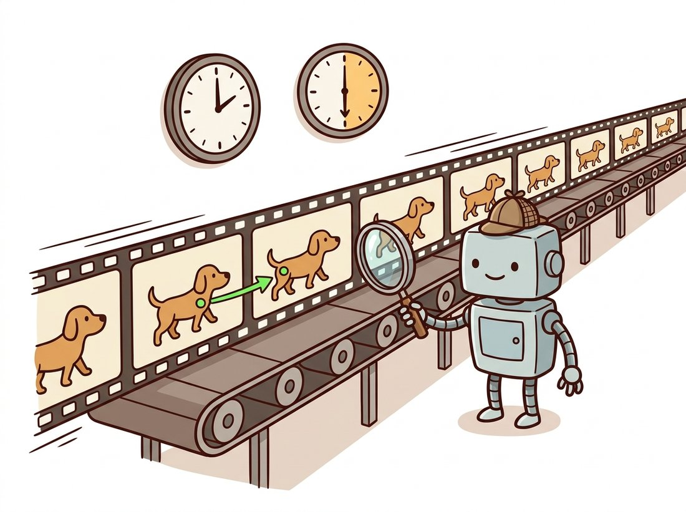
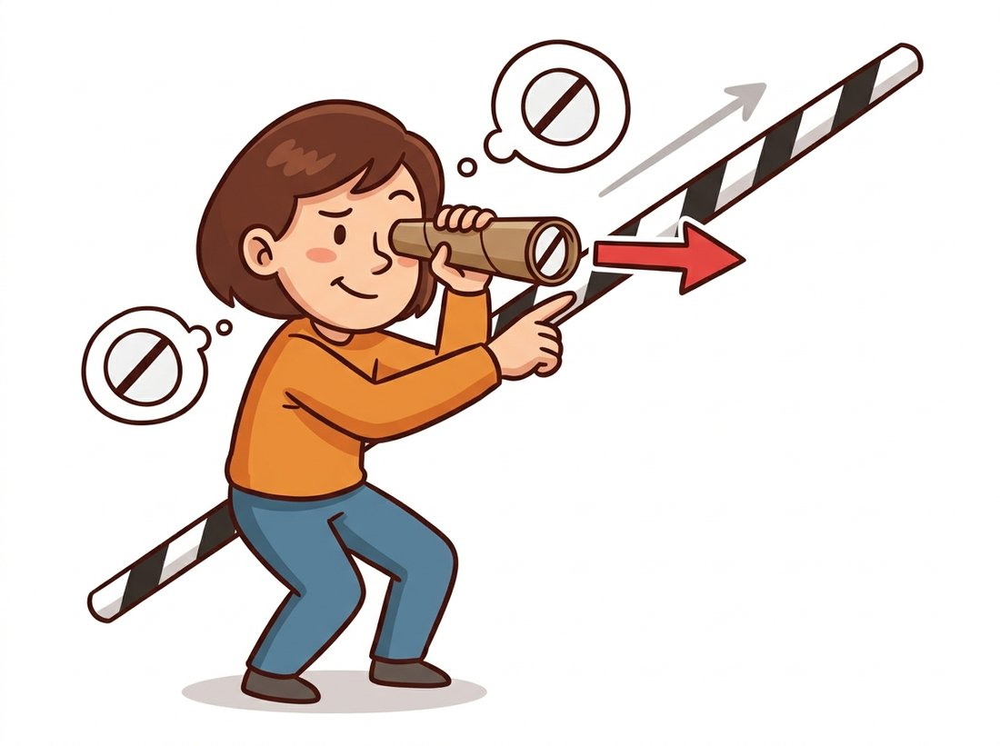

"I promise I am the same pixel you saw a thirtieth of a second ago. I have merely relocated. Please stop asking for identification."
An Optimistically Constant Pixel
A camera never measures motion; it measures brightness twice, and motion is the story we tell to explain why the brightness moved. This section makes that story precise. The motion field is the geometric truth: where each 3D point's projection actually went. Optical flow is the observable: where the brightness patterns appear to go. The brightness constancy assumption is the bridge between them, and differentiating it yields the optical flow constraint equation, one equation in two unknowns. That deficit, the aperture problem, is the original sin of motion estimation: every method in this chapter, and every learned method in Chapter 26, is at heart a different way of paying off the missing equation.
Hand a single photograph to any algorithm and ask "is the car moving?" and the honest answer is that there is no way to know. Motion lives between frames, never inside one, and that is the new measurement axis this chapter opens. Until now the book has processed single images; Chapter 14 used several, but each was a deliberate, well-separated viewpoint. Video is different: a dense stream of frames, typically 30 per second, in which almost nothing changes between consecutive samples. That near-stillness is the gift. Because frames are so close in time, the change between them is small enough to treat with calculus, and calculus is exactly what this section applies. The illustration below sets the scene: a video is a stack of barely-changed frames, and motion is what we read out of the tiny differences between them.

1. From Images to Image Sequences Beginner
Notation first. A grayscale video is a function of three variables, $I(x, y, t)$: intensity at pixel $(x, y)$ at time $t$. A single frame is a slice at constant $t$. Everything in Chapter 3 about spatial derivatives $I_x = \partial I / \partial x$ and $I_y = \partial I / \partial y$ carries over unchanged; the new object is the temporal derivative $I_t = \partial I / \partial t$, estimated in the simplest case by subtracting one frame from the next. With three derivatives in hand, we can ask the question that defines this chapter: how is the brightness at one moment related to the brightness a moment later?
The geometric answer is called the motion field. Every visible 3D point in the scene has some velocity relative to the camera (because it moves, or the camera moves, or both). Project each such velocity through the camera model of Chapter 12 and you get a 2D vector at every pixel: the true image-plane displacement of the world. The motion field is what a physicist would want to measure. Unfortunately, no sensor measures it. The camera records brightness, and brightness is only loosely attached to geometry.
What we can hope to estimate from pixels is optical flow: the apparent motion of brightness patterns. Define it operationally as the vector field $(u(x,y), v(x,y))$ that warps frame $t$ into frame $t+1$ as well as possible. In friendly conditions (matte surfaces, steady lighting, textured scenes) optical flow and the motion field agree, and flow is a perfectly good measurement of motion. The interesting failures happen when they part ways.
It is tempting to read the flow vector $(u, v)$ as an object's velocity. It is not: it is a per-frame pixel displacement, an apparent shift in the image between two adjacent samples, with no time and no metric scale attached. The same physical car, filmed at 60 frames per second instead of 30, produces flow vectors half as long, even though the car's real speed has not changed. And two cars moving at identical world speeds produce very different flow magnitudes if one is near the camera and one is far, because projection shrinks distant motion (the same depth dependence that powers the focus-of-expansion analysis in Chapter 13). To recover a physical velocity you must multiply by the frame rate and then undo the projection with a calibrated camera and a depth estimate from Chapter 12. Flow alone is pixels per frame, never meters per second.
2. When Flow and Motion Disagree Beginner
Two classic thought experiments calibrate your intuition. First, a perfectly smooth matte sphere rotating in place under fixed lighting: the motion field is large (every surface point sweeps sideways), yet the image does not change at all, because the sphere's shading depends only on geometry that is rotationally symmetric. Motion field large, optical flow zero. Second, the same sphere held still while a light source orbits it: now no point moves, but the shading sweeps across the surface and the image changes everywhere. Motion field zero, optical flow large. The barber pole illusion is the everyday version: the helical stripes physically rotate about a vertical axis (horizontal motion), but the flow you perceive, and that any algorithm estimates, runs vertically along the pole. Figure 15.1.1 sketches both sphere cases side by side.
The practical reading of Figure 15.1.1 is not "flow is broken" but "flow measures brightness transport, and you must know when brightness transport equals motion." On textured, diffusely lit surfaces it does. On specular highlights, shadows, smoke, and screens it does not, and a system that feeds flow into downstream logic (a tracker, a SLAM front end like Chapter 14's, a video generator) inherits those mismatches as input errors.
The barber pole illusion is not just a perceptual curiosity; it is a hardware constraint. Optical computer mice estimate flow from a tiny patch of desk a few millimeters wide, and on a surface with strongly oriented grain (brushed metal, certain wood finishes) the sensor's flow estimate slides along the grain exactly like the barber pole's stripes. That is why some mice get visibly confused on glossy, striped, or transparent surfaces: the aperture problem, in your hand, at 8000 reports per second.
3. Brightness Constancy and the Constraint Equation Intermediate
To estimate flow we need an equation linking what we observe (derivatives of $I$) to what we want (the vector $(u, v)$). The link is the brightness constancy assumption: a small surface patch keeps its brightness as it moves. Formally, if the patch at $(x, y)$ at time $t$ moves by $(u, v)$ in one frame interval,
$$ I(x + u,\; y + v,\; t + 1) \;=\; I(x, y, t). $$
This is an assumption, not a law: it holds for Lambertian surfaces under constant illumination and fails for everything Figure 15.1.1 warned about. Accept it provisionally and apply a first-order Taylor expansion, legitimate because consecutive video frames differ by a pixel or two at most:
$$ I(x+u, y+v, t+1) \;\approx\; I(x,y,t) + I_x u + I_y v + I_t . $$
Setting the two sides equal cancels $I(x,y,t)$ and leaves the optical flow constraint equation (OFCE), the single most important formula in this chapter:
$$ I_x u + I_y v + I_t = 0, \qquad \text{equivalently} \qquad \nabla I \cdot \mathbf{v} = -I_t . $$
Pause on what this says. At every pixel, the three measurable derivatives constrain the two unknown flow components. But it is one linear equation in two unknowns: its solution set is not a point but a line in $(u, v)$ velocity space, perpendicular to the image gradient. Any flow vector on that line explains the observed brightness change equally well. The component of flow along the gradient (across the local edge) is pinned down; the component perpendicular to the gradient (along the edge) is invisible. Figure 15.1.2 draws this constraint line, and the next subsection gives the geometry its famous name.
4. The Aperture Problem Intermediate
The underdetermination in Figure 15.1.2 is called the aperture problem: viewed through a small window (and a derivative is the smallest window there is), a moving edge only reveals its motion across itself. The vector the data does pin down is the normal flow,

$$ \mathbf{v}_\perp \;=\; -\,\frac{I_t}{\lVert \nabla I \rVert}\,\frac{\nabla I}{\lVert \nabla I \rVert}, $$
the projection of the true flow onto the gradient direction. Read the formula in two halves: the right-hand fraction $\nabla I / \lVert \nabla I \rVert$ is just the unit vector pointing across the edge, and the scalar $-I_t / \lVert \nabla I \rVert$ is its length, the across-edge speed that a brightness change of $I_t$ implies given a gradient steepness of $\lVert \nabla I \rVert$. A strong gradient (sharp edge) means a small change in $I_t$ already accounts for the motion, so the speed is small; a weak gradient needs a large motion to produce the same $I_t$. Where the gradient vanishes (flat regions), even that is gone: $0 \cdot u + 0 \cdot v = -I_t$ constrains nothing.
Step back and the local information budget sorts into three tiers, and you have met all three before. Flat regions say nothing about motion. Edges (one strong gradient direction) determine one component, exactly like the line structures of Chapter 9. Corners and textured patches (two strong gradient directions) determine motion fully, which is precisely why Chapter 10 found corners to be the matchable points. The next section makes this correspondence exact: the matrix that decides trackability is the same structure tensor that decided cornerness.
Everything in optical flow estimation is a strategy for funding the missing second equation. Lucas-Kanade (Section 15.2) borrows equations from neighboring pixels by assuming they share one velocity. Horn-Schunck (Section 15.3) borrows from the whole image by assuming the flow field is smooth. Learned methods such as RAFT (Chapter 26) borrow from millions of training videos by assuming the current scene moves like scenes seen before. The aperture problem is never solved; it is only ever paid for with assumptions, and each method's failure modes are exactly the places its assumption stops holding.
5. Measuring the Derivatives Beginner
The OFCE is built from three derivative images, and estimating them well matters more than beginners expect. The spatial derivatives $I_x, I_y$ come from the derivative filters of Chapter 3 (Sobel or the smaller central-difference kernels). The temporal derivative $I_t$ is a difference between frames, ideally computed after slight smoothing so that noise does not masquerade as motion. The code below computes all three from a pair of frames and then forms the normal flow magnitude, the part of motion that local data actually determines.
import cv2
import numpy as np
f0 = cv2.imread("frame_000.png", cv2.IMREAD_GRAYSCALE).astype(np.float32) / 255
f1 = cv2.imread("frame_001.png", cv2.IMREAD_GRAYSCALE).astype(np.float32) / 255
# Mild blur first: derivatives amplify noise (Chapter 3's standard caution)
f0s = cv2.GaussianBlur(f0, (5, 5), 1.0)
f1s = cv2.GaussianBlur(f1, (5, 5), 1.0)
Ix = cv2.Sobel(f0s, cv2.CV_32F, 1, 0, ksize=3) / 8.0 # /8 normalizes Sobel
Iy = cv2.Sobel(f0s, cv2.CV_32F, 0, 1, ksize=3) / 8.0
It = f1s - f0s # forward difference in time
grad_mag = np.sqrt(Ix**2 + Iy**2)
normal_flow = np.where(grad_mag > 1e-3, -It / (grad_mag + 1e-8), 0.0)
print(f"|It| mean: {np.abs(It).mean():.4f}")
print(f"normal flow range: {normal_flow.min():.2f} .. {normal_flow.max():.2f} px")
# Typical output for a slow traffic clip:
# |It| mean: 0.0061
# normal flow range: -2.31 .. 2.18 pxwhere guard skips flat regions whose gradient is too weak to constrain anything, the aperture problem's third tier.
Run this on any video pair and inspect normal_flow: it is large on moving edges, zero in flat sky and road, and ambiguous along structures aligned with their own motion. That image is the honest raw material of motion estimation; everything after it is inference. To see what a full estimator produces from the same two frames, the library shortcut below jumps ahead to a dense algorithm that Section 15.3 will open up properly.
The 20-line derivative pipeline above produces only the normal component. OpenCV's Farneback estimator delivers a complete dense flow field, both components at every pixel, in a single call, replacing the roughly 60 lines a minimal dense estimator takes from scratch (Section 15.3 builds one). Internally it fits local polynomial expansions, runs a coarse-to-fine pyramid to handle large motions, and iterates a displacement update, all of which Sections 15.2 and 15.3 unpack.
flow = cv2.calcOpticalFlowFarneback(
(f0 * 255).astype(np.uint8), (f1 * 255).astype(np.uint8), None,
pyr_scale=0.5, levels=3, winsize=15, iterations=3,
poly_n=5, poly_sigma=1.2, flags=0)
u, v = flow[..., 0], flow[..., 1] # full flow, not just the normal part6. When Brightness Constancy Breaks Intermediate
Brightness constancy fails in well-catalogued ways, and recognizing the catalogue saves debugging weeks. Global illumination changes: auto-exposure, auto-white-balance, clouds; the entire OFCE is violated at once because $I_t$ is nonzero everywhere with no motion at all. Specularities and shadows: brightness moves independently of surfaces, as in Figure 15.1.1. Occlusions: at object boundaries, pixels appear and disappear; no displacement explains them, so the Taylor story collapses there. Large motion: the first-order expansion assumed sub-pixel displacement; a car moving 40 pixels per frame makes the linearization meaningless, a failure called temporal aliasing that pyramids will repair in Section 15.2.
Classical remedies exist for each. Gradient constancy ($\nabla I$ preserved instead of $I$) survives additive illumination shifts. The census transform, which encodes each pixel by the sign pattern of its neighborhood, survives any monotonic brightness change and became the default data term in robust pipelines. Pre-smoothing and pyramids handle aliasing. None of these is exotic: they are all instances of the same move, replacing raw brightness with a representation more faithful to geometry, a thread that runs from Chapter 2's normalization tricks all the way to learned features.
Who & situation: a traffic-analytics vendor running flow-based queue-length estimation on 200 highway cameras, computing average motion in lane polygons from Farneback flow. Problem: every evening around dusk, queue estimates went haywire for 20 minutes: the system reported wall-to-wall motion on a stationary traffic jam. The cause was the cameras' auto-exposure ramping as light fell; each adjustment changed global brightness between frames, $I_t$ lit up everywhere, and the estimator dutifully explained it as motion. Decision: rather than fight the cameras, the team made the data term illumination-proof: each frame was census-transformed before flow estimation, and a cheap global-gain check (median of $I_t$ over the whole frame) flagged exposure steps so those frame pairs could be skipped. Result: dusk false motion disappeared, and the gain check incidentally caught two cameras with failing sensors that flickered at noon. Lesson: when flow output looks impossible, audit the assumption before the algorithm; brightness constancy is the component most likely to have silently failed.
Modern flow networks no longer assume brightness constancy; they learn a matching cost from data. RAFT (ECCV 2020) compares learned per-pixel features across all pairs of positions, and SEA-RAFT (Wang, Lipson & Deng, ECCV 2024, arXiv:2405.14793) streamlined that recipe to real-time speed while reporting state-of-the-art accuracy on the Spring benchmark at publication, using a mixture-of-Laplace loss to handle exactly the occlusion ambiguity cataloged above. MemFlow (CVPR 2024, arXiv:2404.04808) adds a memory module so the estimate at frame $t$ exploits history rather than a single pair, and event cameras sidestep the frame-pair formulation entirely by reporting per-pixel brightness changes with microsecond stamps, an active 2024-2026 hardware-plus-algorithms frontier. All of them still confront the aperture problem; they simply amortize its resolution into training data. Chapter 26 dissects RAFT's architecture in detail.
For each scenario, state whether the motion field and the optical flow agree, and if not, which is larger: (a) a stationary camera filming a rotating, heavily textured beach ball; (b) the same camera filming a rotating, perfectly uniform white ball; (c) a camera filming a fixed scene while the room lights dim smoothly; (d) a camera filming a waterfall where the water is featureless white foam; (e) an LED billboard playing a video of moving cars, filmed by a static camera. Justify each answer with the brightness constancy assumption.
Create a synthetic pair: take any sharp grayscale image, shift it right by exactly 0.5 pixels using cv2.warpAffine with bilinear interpolation, and treat the original and shifted images as consecutive frames. Compute $I_x, I_y, I_t$ as in this section's code and evaluate the OFCE residual $|I_x \cdot 0.5 + I_y \cdot 0 + I_t|$ over all pixels with gradient magnitude above a threshold. Report the median residual. Then repeat with shifts of 1, 2, 4, and 8 pixels and plot median residual versus shift. At what displacement does the linearization visibly break, and how does pre-blurring with $\sigma = 2$ change that point?
Using a real video pair, compute the structure of local motion information: at every pixel, form the $2 \times 2$ matrix $\sum \nabla I \nabla I^T$ over a $7 \times 7$ window (this anticipates Section 15.2) and classify pixels into flat (both eigenvalues small), edge (one large), and corner (both large) using thresholds of your choice. Visualize the three classes as colors over the frame and overlay the normal flow from this section's code. Where in the image is full flow recoverable from local data alone? Estimate the fraction of pixels in each class and discuss what that implies for dense flow estimation.